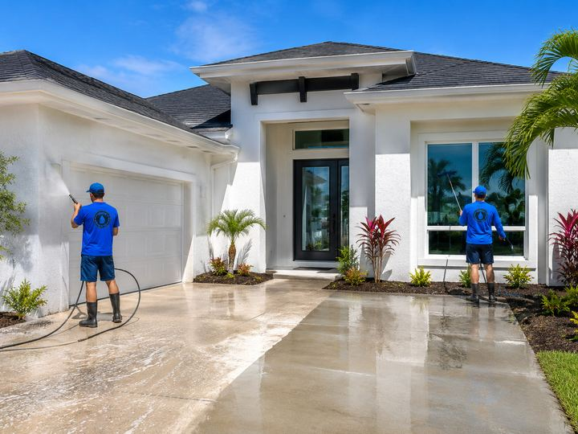
House Soft Washing
Mold, mildew, pollen and dirt removed from stucco, siding and brick. Customers say it looks freshly painted.
Quote my house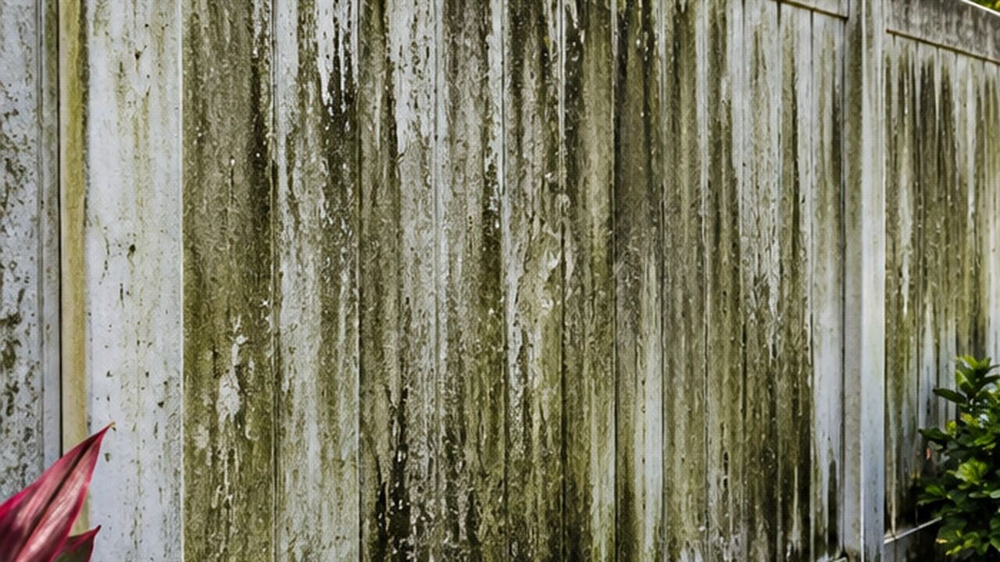
Roofs, houses, pool cages, driveways and pavers cleaned the right way by a family-owned crew that shows up on time and goes above and beyond.
Wright's Southern Soft Wash LLC is a family-owned soft washing and pressure washing company in Palm Coast, Florida, owned by Colton Wright. It soft washes houses and roofs, cleans pool cages, lanais, driveways, decks, docks and fences, cleans and seals pavers, and handles gutters, soffits, windows and commercial properties across Palm Coast, Flagler Beach, Bunnell and Flagler County. Customers rate it 5.0 out of 5 from 110 Google reviews.
Florida heat and humidity grow mold, mildew and algae fast. We soft wash roofs, stucco and screens at low pressure so nothing gets damaged, and use pressure where it belongs on concrete and pavers.

Mold, mildew, pollen and dirt removed from stucco, siding and brick. Customers say it looks freshly painted.
Quote my house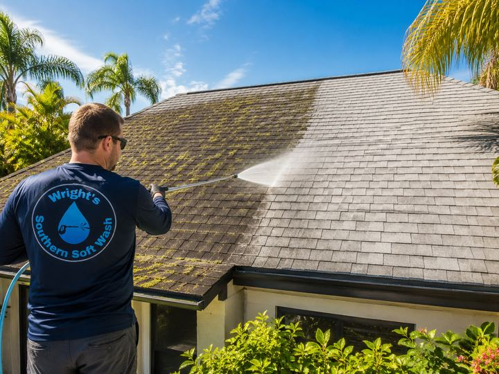
Low-pressure cleaning for tile, shingle and metal roofs that lifts black streaks and algae without damage.
Quote my roof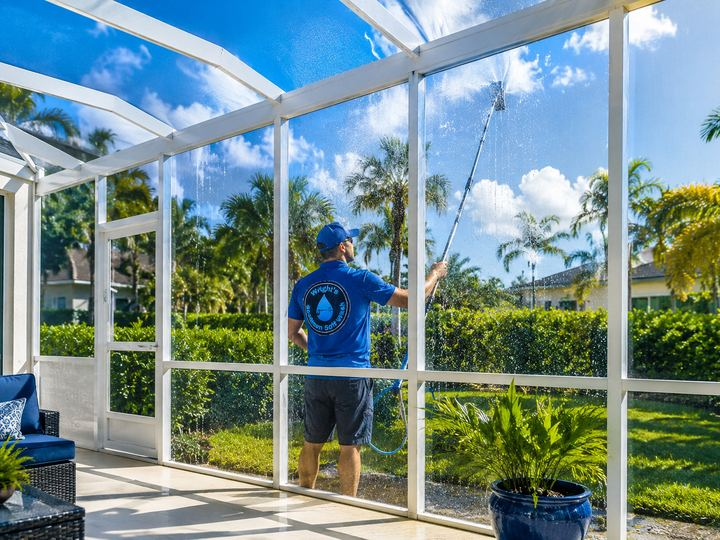
Screens inside and out, frames, pool decks and the gutter above the cage. Furniture moved or covered first.
Quote my pool cage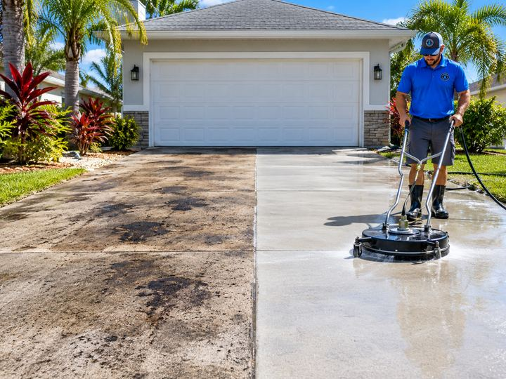
Driveways, sidewalks, curbs and patios. Rust stains, tire marks and black mildew taken off. HOA notice? We can come fast.
Quote my driveway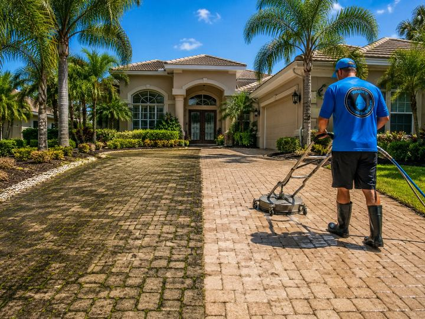
Pavers cleaned, re-sanded and sealed so the color comes back and weeds and stains stay out.
Quote my pavers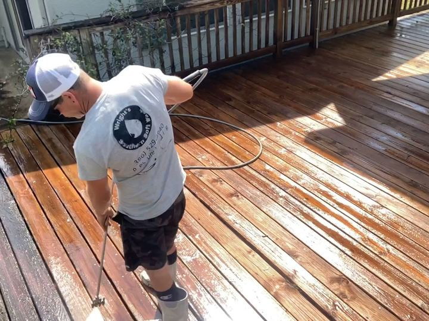
Wood and composite decks, docks, vinyl and wood fences brought back from green and gray.
Quote my deck or fence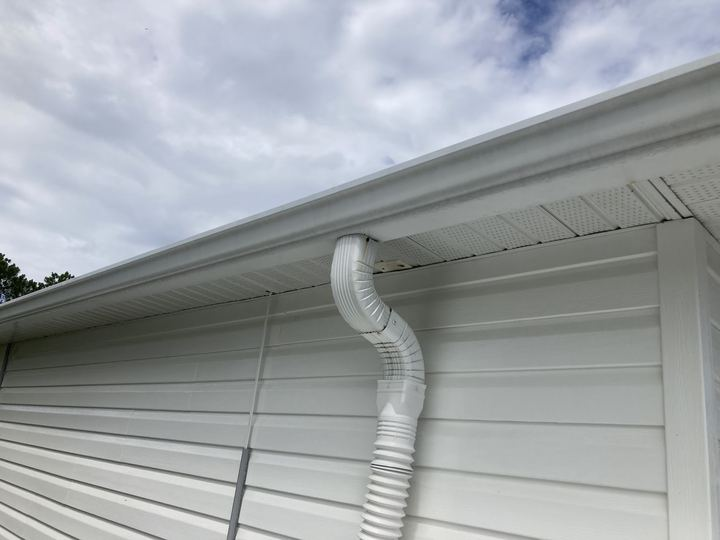
Gutters blown out and brightened, downspouts cleared, and soffits and roof trim washed, even on two-story homes.
Quote gutters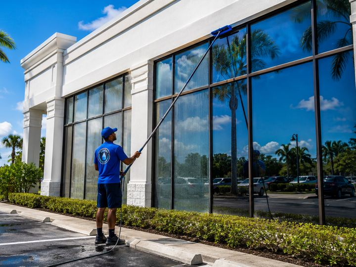
Streak-free exterior windows and skylights, including hard-to-reach second-story glass.
Quote windowsEvery clip is a real Wright's Southern Soft Wash job, before and after: fences, pool cages, tile roofs, lanais and pool deck pavers around Palm Coast and Flagler County.
Slide the handle on any photo.
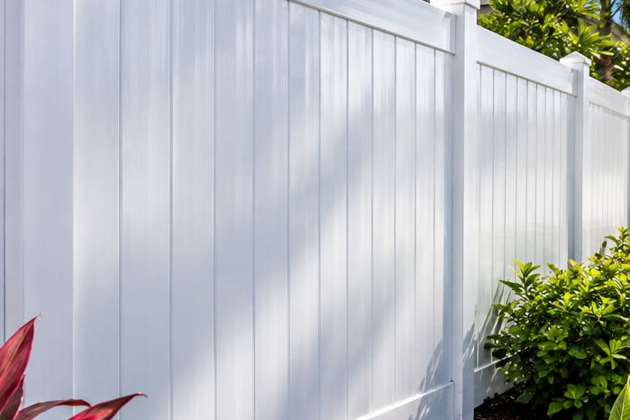
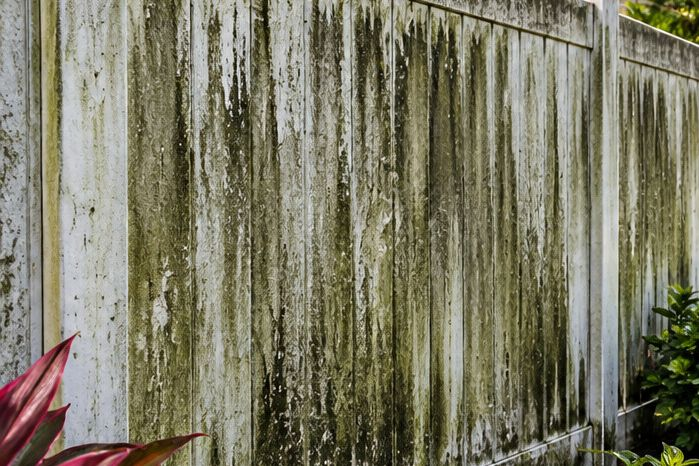
BeforeAfter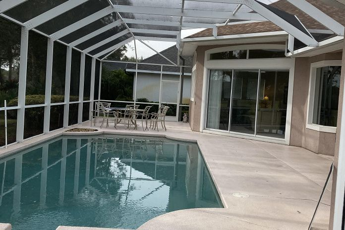
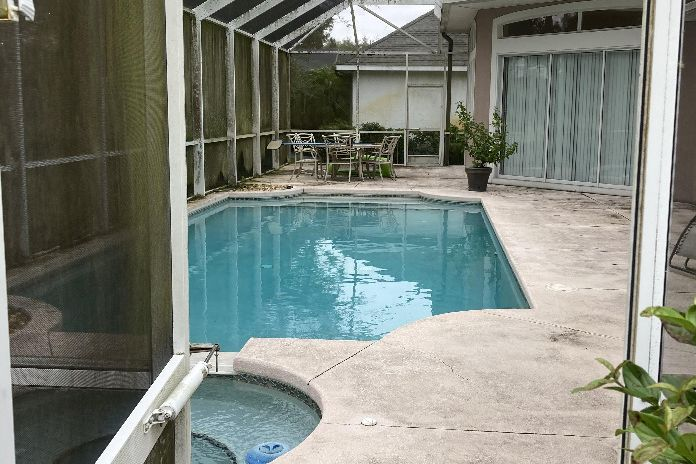
BeforeAfter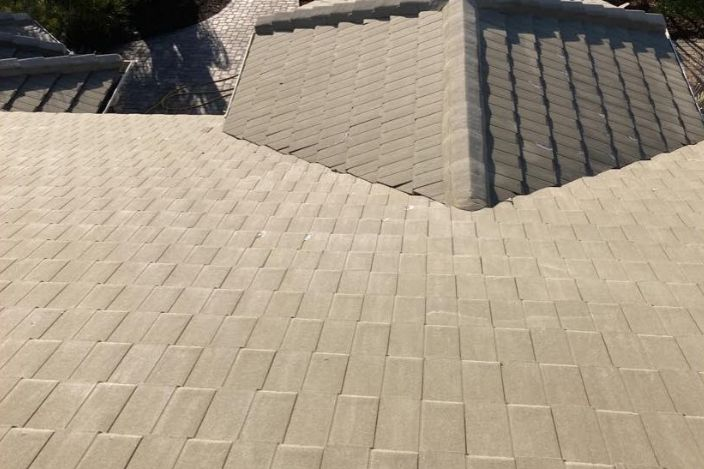
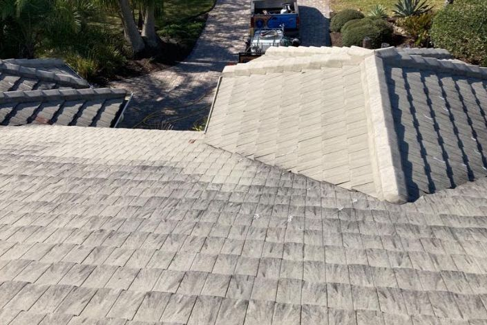
BeforeAfter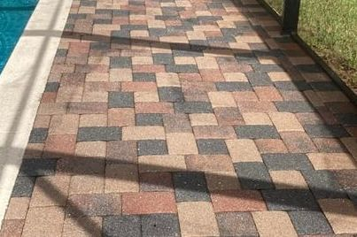
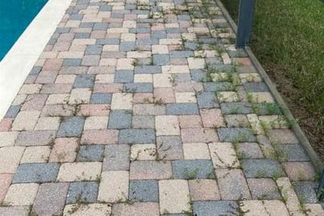
BeforeAfter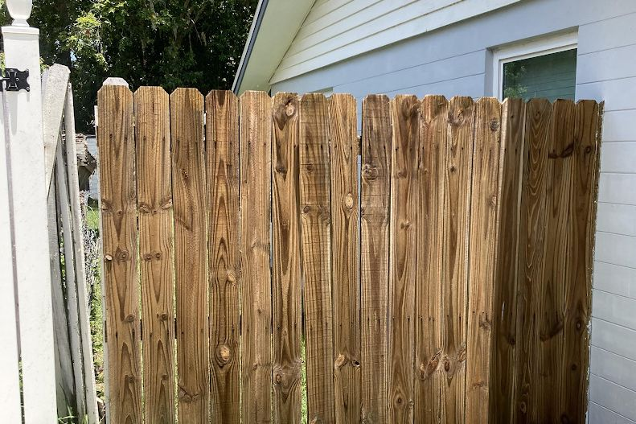
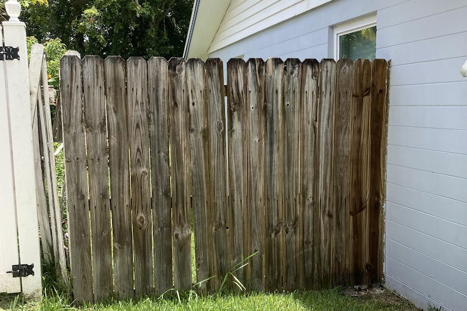
BeforeAfter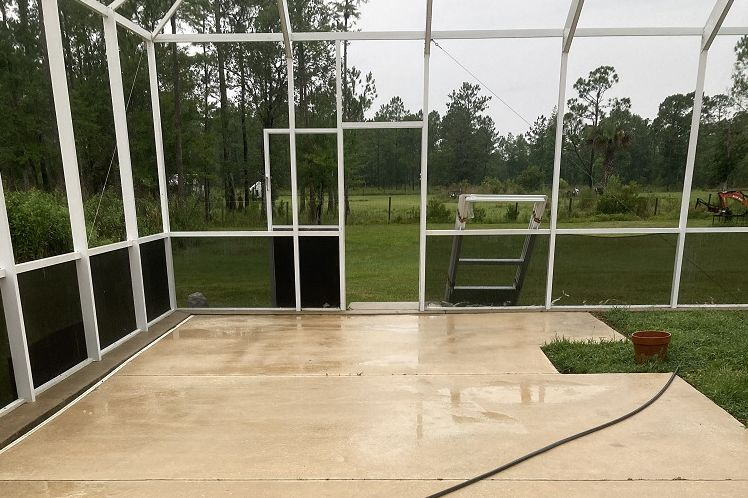
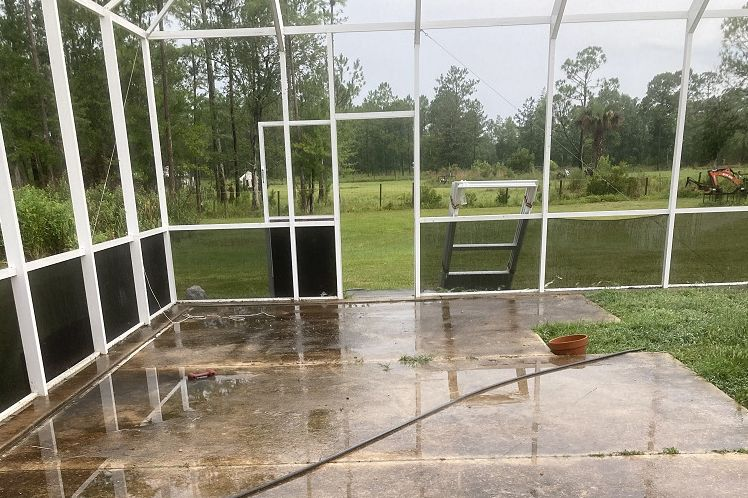
BeforeAfter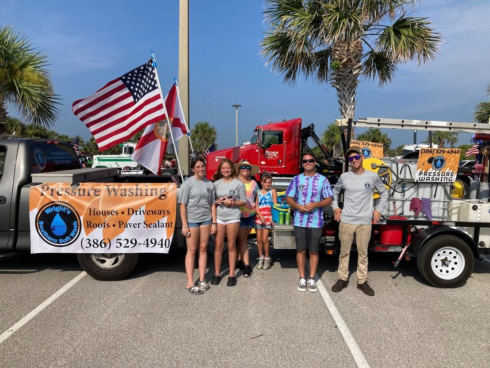
Wright's Southern Soft Wash is a locally owned, family-run business led by Colton Wright. Colton handles the work, Brooke makes quoting and scheduling easy, and the crew treats every property like their own.
Sidewalks, drive-thrus, dumpster pads, signage, warehouses, storefront glass and rental turnovers. We work around your hours so customers see a clean property.
Request a commercial quote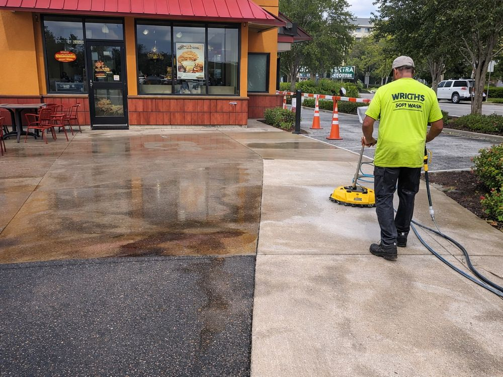
"Finally, someone did me right, so Wright! … What a Beautifully CLEAN, neat job Colton Wright and his helper did pressure washing my lanai and cleaning the gutters! I can eat off the floor now, lol!"
"Wright’s did an amazing job soft washing our tile roof, and even repaired a tile in the process! Very responsive and sent photos of the before and after."
"I was in jam with my HOA over my driveway. I called and they were able to come out that day. They did a great job and cleaned my sidewalks as well, which I wasn't expecting."
"I can't believe how clean and bright everything is. They were fast on time, professional and friendly. … I've signed up for a regular schedule of cleaning and it is incredibly affordable."
"Colton turned our bird cage white again (it was green when we moved in). Excellent job at a good price."
"This is the first time in 17 years that this has been done and my house looks like it was freshly painted!! He was also able to remove rust stains on the driveway and parts of the house…"
"Colton did an AMAZING job on everything. It all looks brand new. Brooke was super friendly and made the quote and scheduling process seamless."
"Before he left he pulled his truck and trailer forward and then got out and cleaned up any residue where he had been parked. He even wiped off my mailbox…! Attention to detail like that is amazing."
"Colton was professional, arrived on time, efficient, excellent result, cleaned up, all for a Very reasonable price. He even did more than I expected cleaning my entire roof trim…"
Fill out the form, call or text. Photos help us quote faster.
We come out quickly, often the same day, and give you a clear, fair price.
Furniture and plants protected, and the right method for every surface.
Before and after photos, and we don't leave until you're happy.
Based in Palm Coast and working across Flagler County every week, from the beachside to the west side. Not sure if you're in range? Call or text and ask.
Tell us what needs cleaning. We usually get back to you the same day.
Thanks. We'll reach out shortly with your free estimate.
Need it sooner? Call (386) 529-4940.
Soft washing is a low-pressure cleaning method that uses a cleaning solution to kill mold, mildew, algae and bacteria at the root, then rinses them away gently. It is the safe way to clean roofs, stucco, siding, screens and painted surfaces, and it stays clean much longer than high pressure alone.
Wright's Southern Soft Wash gives every customer a free, no-obligation estimate based on the size of the property, the surfaces being cleaned and their condition. Customers consistently describe the pricing as fair and reasonable, and bundling services in one visit is the best value. Call or text (386) 529-4940.
Yes. Roofs are cleaned with a low-pressure soft wash and the right solution for the roof type, so tile, shingle and metal roofs are not damaged. Black streaks and algae lift away and the roof keeps brightening with the next few rains.
Yes. Wright's Southern Soft Wash cleans paver driveways, pool decks and lanais, re-sands the joints and applies sealer to bring back the color and help keep weeds and stains out.
Most Flagler County homes need a house soft wash about once a year because heat and humidity grow mold, mildew and algae quickly. Many customers set up a regular yearly schedule. Shaded sides, pool cages and driveways may need it more often, and roofs usually every few years.
Yes. Rust stains from sprinkler water and bird dropping buildup can be treated and removed from driveways, pool decks, walkways, siding and roofs. The soft wash solution neutralizes the acid in bird droppings instead of just rinsing the surface.
Yes. Wright's Southern Soft Wash cleans storefronts, restaurant sidewalks and drive-thrus, signage, warehouses and other commercial concrete, as well as rental properties and homes being listed for sale.
Wright's Southern Soft Wash is based in Palm Coast, Florida and serves Palm Coast, Flagler Beach, Bunnell and the surrounding Flagler County area.
Free estimates, fair prices and a crew that goes above and beyond.